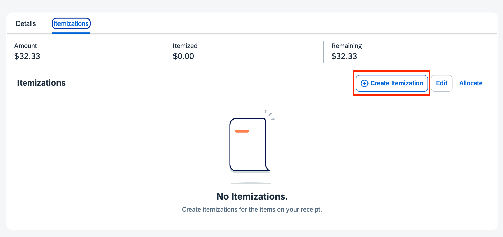
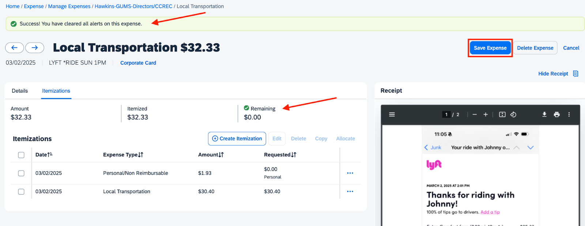
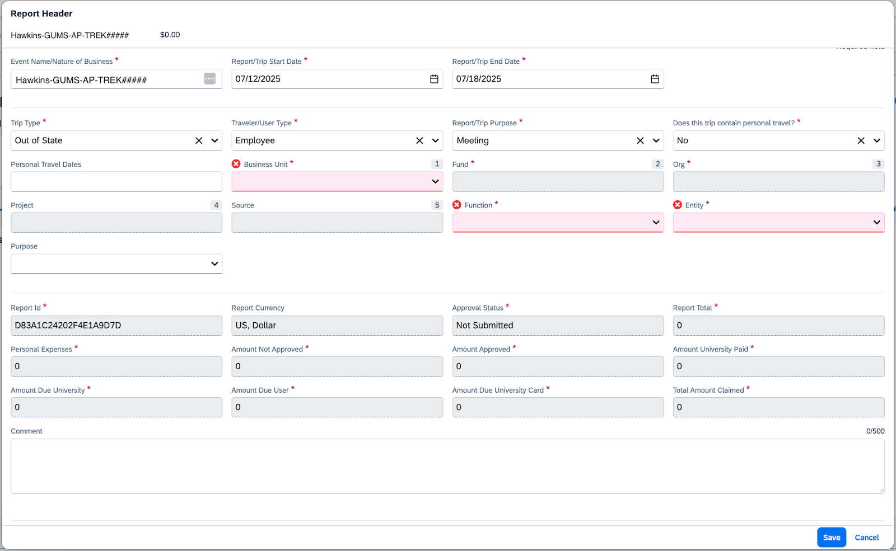

Visit each of the following expense types to learn more about the processes associated with each.
How to Add Agency Booking Fees as an Expense Type
Agency Booking Fees are charged when booking flights, hotels, etc. in the Concur system.
1. Select Add Expense then Select Available Expense.
2.Select Agency Booking Fee as the Expense Type.
3. Confirm the remaining information is correct.
4. Select Save Expense if you are finished adding expenses; Select Save and Add Another to continue adding expenses.
For more deatils, visit OU Travel's Concur Training Guide: Agency Booking Fees
How to Add Airfare as an Expense Type
IMPORTANT NOTE: Do not add an airfare expense to the report until you have received an auto-generated email about the company card transactions. The automatic email from Concur (see image example) is generated after the airfare expenses process. Charges can take a week to process before they appear on your Concur account.
Concur email notifies the employee of new charges to the Company Card.
1. Select Add Expense then Select Available Expense.
2. Locate and select the box associated with the airfare expense.
3. Confirm Expense Sources or separate expenses if they are not for the same report.
4. Select Add To Report.
5. You will be reidrected to the Manage Expenses page.
6. Select the expense line to open the expense.
7. Confirm and enter the required Expense Details.
Comment: Enter details associated with this portion of the trip.
Add Receipt: Upload the imgage(s) of the itemized receipt(s).
8. Select Save Expense if you are finished adding expenses; Select Save and Add Another to continue adding expenses.
How to Add Airline Fees as an Expense Type
Airline Fees include baggage fees, flight changes, etc. Overweight luggage is a personal/non-reimburseable expense. Do not charge in-flight services to the travel card.
NOTE: If extra luggage or overweight fees are incurred because of required presentation/event materials, those may be paid with the travel card.
1. Select Add Expense then Select Available Expense.
2. Select Airline Fees as the Expense Type.
3. Select the Type of Fee. Baggage fees, change fees, and a few other airline fees are approved. Unnecessary fees, like a seating upgrade or on-board internet access, may be considered a personal/non-reimburseable expense.
4. Enter and confirm all the required fields in the report details.
5. Add a Comment on why the fee was charged.
6. Upload receipts for this expense.
7. Select Save Expense if you are finished adding expenses; Select Save and Add Another to continue adding expenses.
For more deatils, visit OU Travel's Concur Training Guide: Airline Fees
How to Add Local Transporation as an Expense Type
IMPORTANT NOTE: Local Transportation should always be paid with your OU Travel Card. If for some reason, you paid with cash/out of pocket, keep your receipts and be prepared to explain in the comment section why you did not use your OU Travel Card.
1. Select Add Expense then Select Available Expenses.
Travel card purchases will appear under the Available Expenses tab after processing. If there is no number (#) to the right of Available Expenses, then the payment has not been processed/posted. You will receive a Concur email informing you that a charge expense is available.
2. Locate and select the box associated with the Local Transporation expense.
3. Select Add To Report.
4. You will be redirected to the Manage Expenses page.
Notice that after adding the expense, errors/warnings (Alerts) may appear. These will be cleared after completing the next few steps.
To view the Alerts, click on the dropdown arrow (⌄) in the red Alert bar or click the red X in the expense table.
5. Select the expense to open the expense.
6. Enter and confirm the required Expense Details.
Expense Type: Auto-populates from your previous selection. This can be changed if the wrong expense type was previously selected.
Transaction Date: This date cannot be adjusted. It is the date the transaction was processed on the OU Travel Card.
Travel Type: Confirm that Employee is selected.
Trip Type: Confirm that Out of State is selected.
Report/Trip Purpose: Confirm Meeting is selected.
Event Name/Nature of Business: Use K20's required format.
K20 Required Format:
Single Event Report Name: [LastName-GrantAbbreviation-ProgramAbbreviation-TREK#]
Multiple Event Report Name: [LastName-GrantAbbreviation-ProgramAbbreviation-Multi] - List all corresponding TREK numbers, meeting locations, and dates in the comments section of the report header.
Reference the K20 Center Shared Acronyms to choose the correct Grant and Conference Abbreviations (e.g., NCCEP, ISTE).
Note: If any of these are incorrect, you will need to Save Expense and edit the Report Header located under the Report Details drop-down menu.
Vendor Name: This will auofill based on the credit card details.
City: Enter the city of the local transportation.
Payment Type: This will display as Travel Card
Amount: This will autofill based on the charge.
Currency: This will autofill based on the charge.
Comment: Enter details associated with this portion of the trip.
Add Receipt: Upload the image(s) of the itemized receipt(s).
Anything over $25 requires a Receipt upload. It is optional to upload a receipt for anything under $25.
NOTE: This threshold could be adjusted at any time, and any reviewer or approver may request that you attach a receipt for these fees.
7. Select Save Expense if you are finished adding expenses; Select Save and Add Another to continue adding expenses.
IMPORTANT NOTE: Travel Policy caps tips at 20% of the fare.
Tipped over 20% with Travel Card: Any amount over 20% must be itemized as Personal/Non Reimbursable.
Example: If the fare was $25.33 and you added a $7.00 tip (28%) to the fare, you would itemize the expense so $1.93 is categorized as Personal/Non Reimbursable and $30.40 is Local Transportation.
i. Select Itemizations.
ii. Select Create Itemization.

iii. Select Personal/Non Reimbursable as the Expense Type.
iv. Enter the amount of tip that was over the 20% in the Amount field.
v. Add a Comment.
vi. Select Save and Add Another to continue itemizing.
vii. Select Local Transporation as the Expense Type.
viii. Enter the Remaining amount in the Amount field.
ix. Add a Comment if more details are necessary for anyone reviewing this report.
x. Select Save Itemization or Save and Add Another if there is still an amount remaining to be itemized.
xi. Select Save Expense once all the itemizations have been completed.

Tipped over 20% with Cash/Out of Pocket: Reduce tip to 20% of the fare on the Tip field.
Example: If the fare was $25.33 and you paid $7.00 tip in cash, change the tip amount in Concur to $5.07, 20% of the fare.
Notice that the Alerts are cleared. Comments and Receipts have been added to the expense.
How to Add Lodging as an Expense Type
Helpful Hint: Do not add a lodging expense to the report until you have received an auto-generated email about the company card transactions. The automatic email from Concur (see image example) is generated after the lodging expenses process. Charges can take a week to process before they appear on your Concur account.
Concur email notifies the employee of new charges to the Company Card.
1. Select Add Expense then Select Available Expenses.
2. Select the correct Travel Card charge for Lodging and select Add to Report.
3. Click on the lodging expense that appears in the report.
4. Don’t panic if you see a lot of Alerts! These will be resolved by completing the remaining steps.
5. Enter the Expense Details.
Type of Lodging Rate: Select Sponsored Event Rate, unless written approval or documentation for lodging beyond this rate was received before booking.
Date Range: Enter the check-in and check-out dates of your hotel stay.
Transaction Date: This date cannot be adjusted. It is the date the transaction was processed on the OU Travel Card.
Travel Type: Confirm that Employee is selected.
Trip Type: Confirm that Out of State is selected.
Report/Trip Purpose: Confirm Meeting is selected.
Event Name/Nature of Business: Use K20's required format.
K20 Required Format:
Single Event Report Name: [LastName-GrantAbbreviation-ProgramAbbreviation-TREK#]
Multiple Event Report Name: [LastName-GrantAbbreviation-ProgramAbbreviation-Multi] - List all corresponding TREK numbers, meeting locations, and dates in the comments section of the report header.
Reference the K20 Center Shared Acronyms to choose the correct Grant and Conference Abbreviations (e.g., NCCEP, ISTE).
Note: If any of these are incorrect, you will need to Save Expense and edit the Report Header located under the Report Details drop-down menu.
Vendor Name: This will automatically populate and cannot be adjusted.
City: If the city does not automatically populate, add the city and state of the lodging.
Payment Type: This will automatically populate and cannot be adjusted.
If you can edit this field, remove this lodging expense and add it from the Available Expenses charged to your OU Travel Card (Adding Lodging - Step #1)
If you had to use a personal credit card due to extenuating circumstances, select Cash/Out of Pocket and provide the appropriate documentation and comments with this expense.
Amount: This will automatically populate and cannot be adjusted.
Currency: This will automatically populate and cannot be adjusted.
Add Receipt: Upload an image of your itemized zero-balanced receipt to the receipt box. Ensure the whole receipt is available for review. You can add more than one page by selecting Save and Add.
The screenshots obtained during booking will be uploaded with the itemized hotel receipt.
Screenshots or other documentation if the sponsored GSA rate was unavailable.
6. Select Itemizations.
If prompted to update fields, select Update.
NOTE: Complete steps 7 - 9 if itemizations auto-fill. If these fields don’t auto-populate, then complete steps 10 - 14.
7. Click on the Expense Type, Undefined, to update the itemized expenses. Use the itemized receipt to identify each expense.
8. Select the appropriate lodging Expense Type.
[Lodging, Lodging - Advanced Deposit, Lodging - Non Employee, Lodging Fees, or Lodging Tax].
9. Select Save Itemization.
Repeat steps 7 - 9 until all expenses have an identified Expense Type.
If the itemizations do not auto-populate, use steps 10 - 14.
10. Select Lodging for the Expense Type.
11. Enter the Room Rate (daily, untaxed amount for the room). This should be less than or equal to the GSA rate.
12. Enter the taxes in the individual Tax boxes (Room Tax, Tax 2, Tax 3). Select Add Tax Fields if there are more than three lines of taxes on the bill.
13. Select Save Itemization.
14. Select Save Expense if you are finished adding expenses; Select Save and Add Another to continue adding expenses.
15. Select Create Itemization if a balance remains after categorizing all the prepopulated expenses.
16. Choose the Recurrence. Use the itemized receipt to determine the best Recurrence. Most often, the selection will be the Same daily amount.
17. Enter the Amount charged, and the system will update to reflect the change.
18. Select Save Itemization.
NOTE: Once you have a $0 balance remaining, then the Lodging expense can be saved and all Alerts should be cleared.
19. Select Save Expense ifyou are finished adding expenses; Select Save and Add Another to conintue adding expenses.
NOTE: If there was an Advance Deposit charge for the lodging, create an itemized line for the advance deposit. Enter that amount as a negative value to offset any overages on the expenses.
How to Add Lodging - Advanced Deposit as an Expense Type
Helpful Hint: Do not add a lodging expense to the report until you have received an auto-generated email about the company card transactions. The automatic email from Concur (see image example) is generated after the lodging expenses process. Charges can take a week to process before they appear on your Concur account.
Concur email notifies the employee of new charges to the Company Card.
1. Select Add Expense then Select Available Expenses.
2. Select the correct Travel Card charge for Lodging and select Add to Report.
3. Click on the lodging expense that appears in the report.
Alerts may appear. These will be resolved by following the next few steps.
4. Enter the Expense Details.
Type of Lodging Rate: Select Lodging - Advance Deposit.
Transaction Date: This date cannot be adjusted. It is the date the transaction was processed on the OU Travel Card.
Travel Type: Confirm that Employee is selected.
Trip Type: Confirm that Out of State is selected.
Report/Trip Purpose: Confirm Meeting is selected.
Event Name/Nature of Business: Use K20's required format.
K20 Required Format:
Single Event Report Name: [LastName-GrantAbbreviation-ProgramAbbreviation-TREK#]
Multiple Event Report Name: [LastName-GrantAbbreviation-ProgramAbbreviation-Multi] - List all corresponding TREK numbers, meeting locations, and dates in the comments section of the report header.
Reference the K20 Center Shared Acronyms to choose the correct Grant and Conference Abbreviations (e.g., NCCEP, ISTE).
Note: If any of these are incorrect, you will need to Save Expense and edit the Report Header located under the Report Details drop-down menu.
Vendor Name: This will automatically populate and cannot be adjusted.
City: If the city does not automatically populate, add the city and state of the lodging.
Payment Type: This will automatically populate and cannot be adjusted.
If you can edit this field, remove this lodging expense and add it from the Available Expenses charged to your OU Travel Card (Step #1)
If you had to use a personal credit card due to extenuating circumstances, select Cash/Out of Pocket and provide the appropriate documentation and comments with this expense.
Amount: This will automatically populate and cannot be adjusted.
Currency: This will automatically populate and cannot be adjusted.
Add Receipt: Upload an image of your itemized zero-balanced receipt to the receipt box. Ensure the whole receipt is available for review. You can add more than one page by selecting Save and Add.
5. Select Save Expense if you are finished adding expenses; Select Save and Add Another to continue adding expenses.
How to Add Mileage as an Expense Type
1. Select Mileage and enter the Waypoints (starting location to airport or conference location addresses) for each day of travel.
2. Enter Waypoint A, the starting location, which will match the Departure Location listed in the Itinerary.
Use the table below to help determine which address to use for your starting location.
Actual Starting Location
Workday Location
What do you enter in Concur for Waypoint A?
Must Enter the Following Comment
Office
In-Office
Enter the office address: 3100 Monitor Ave, Norman, OK 73072
No comment required
Home
In-Office
Two options: a. Enter Home address and deduct commute
b. Use the shorter of the two distances in your report so the starting location is closer to Waypoint B.
I left from my home address, and it is the shorter distance to the meeting location.
Office
Remote
Enter the office address: 3100 Monitor Ave, Norman, OK 73072
No comment required
Home
Remote
Enter your personal address. Do not deduct the commute.
It was a remote workday and would not require a commute to the office on OU’s campus.
Addresses entered must accurately match the location of each event.
Examples of valid address Waypoint entries:
Examples of invalid address Waypoint entries:
The Concur system will accept inaccurate addresses. It is the reporter's responsibility to submit a full accurate address. Your supervisor, the OU Grants office, and other OU Concur reviewers/approvers will return your report for inaccurate address reporting. This increases the timeframe to receive reimbursement.
Some rural addresses may not populate in Concur. If this happens, add a comment to that mileage expense with the actual address and a note that the Concur system does not recognize the address.
3. Enter Waypoint B and select Calculate Route.
4. Enter remaining Waypoints.
5. Click the Deduct Commute box if leaving from your house on an in-office workday.
6. After all Waypoints are entered for the travel date, select Add Mileage to Expense.
7. Enter the Report Details:

Expense Type: Auto-populates from your previous selection. This can be changed if the wrong expense type was previously selected.
Transaction Date: Enter the date of travel. If this field automatically updates, confirm that the date accurately reflects the date for mileage reported. Note: Concur uses the date most recently entered on any new expense report.
Traveler Type: Confirm that Employee is selected
Trip Type: Confirm that Out of State is selected
Report/Trip Purpose: Confirm Meeting is selected
Event Name/Nature of Business: Use K20 required format.
K20 Required Format:
Single Event Report Name: [LastName-GrantAbbreviation-ProgramAbbreviation-TREK#]
Multiple Event Report Name: [LastName-GrantAbbreviation-ProgramAbbreviation-Multi] - List all corresponding TREK numbers, meeting locations, and dates in the comments section of the report header.
Reference the K20 Center Shared Acronyms to choose the correct Grant and Conference Abbreviations (e.g., NCCEP, ISTE).
Note: If any of these are incorrect, you will need to Save Expense and edit the Report Header located under the Report Details drop-down menu.
Personal License Plate Number: Enter or confirm the number is correct for the vehicle driven.
Payment Type: Will automatically select Cash/Out of Pocket. This indicates that the employee will be reimbursed for expenses.
Vehicle ID: Confirm it is listed as State.
Note: If this is incorrect, Save Expense and edit your personal vehicle information in your Concur Profile.
Distance: This field will automatically update from the Waypoints you previously entered.
To update any of your Waypoints, click on the Mileage Calculator located on the upper left side of the screen. This will open the map again, allowing you to update or change the addresses within the Waypoints.
Number of Passengers: Add the number of passengers that rode with you. Leave as zero if colleagues did not ride with you.
Comment: Enter additional comments about your trip. Remember comments help provide more context to those reviewing and approving your travel reports (i.e., your supervisor, OU Grants Office, OU Concur reviewers/approvers).
8. Click Save Expense if you are finished adding expenses or click Save and Add Another to continue adding additional dates for mileage, tolls, or parking.
Do not combine multiple travel dates into one mileage expense. Each travel date MUST be represented independently.
How to Add Parking as an Expense Type
IMPORTANT NOTE: Parking fees should always be paid with your OU Travel Card. If for some reason, you paid with cash/out of pocket, keep your receipts and be prepared to explain in the comment section why you did not use your OU Travel Card.
1. Select Available Expenses.
Travel card purchases will appear under the Available Expenses tab after they have been processed. If there is not a number (#) to the right of Available Expenses, then the payment has not been processed/posted. You will receive a Concur email informing you that a charge expense is available.
2. Locate and click the box associated with the parking fee expense.
3. Click Add To Report.
4. You will be redirected to the Manage Expenses page.
Notice that after adding the parking expense to the report, errors/warnings (Alerts) may appear. These will be cleared after completing the next few steps.
To view the Alerts, click on the dropdown arrow (⌄) in the red Alert bar or click on the red X in the expense table.
5. Enter and confirm the required Expense Details.
Expense Type: Auto-populates from your previous selection. This can be changed if the wrong expense type was previously selected.
Transaction Date: This reflects the date you incurred the parking fees. This date cannot be changed.
Traveler Type: Confirm that Employee is selected
Trip Type: Confirm that Out of State is selected
Report/Trip Purpose: Confirm Meeting is selected
Event Name/Nature of Business: Use K20 required format.
K20 Required Format:
Single Event Report Name: [LastName-GrantAbbreviation-ProgramAbbreviation-TREK#]
Multiple Event Report Name: [LastName-GrantAbbreviation-ProgramAbbreviation-Multi] - List all corresponding TREK numbers, meeting locations, and dates in the comments section of the report header.
Reference the K20 Center Shared Acronyms to choose the correct Grant and Conference Abbreviations (e.g., NCCEP, ISTE).
Note: If any of these are incorrect, you will need to Save Expense and edit the Report Header located under the Report Details drop-down menu.
Vendor Name: Will autofill based on the credit card details.
City: Enter the city where the parking fees were charged.
Payment Type: Will display Travel Card.
Amount: Will autofill based on the charge.
Anything over $25 requires a Receipt upload. It is optional to upload a receipt for anything under $25. Select Add Receipt to upload the receipt(s).
Note: This threshold could be adjusted at any time and any reviewer or approver may request that you attach a receipt for these fees.
Currency: Will autofill based on the charge.
Comment: Enter details associated with this portion of the trip.
6. Click Save Expense if you are finished adding expenses or click Save and Add Another to continue adding expenses.
Notice the Alerts are cleared. Comments and Receipts have been added to the expense.
How to Add Tolls as an Expense Type
1. Select Tolls and enter/confirm the required information detailed below.
Expense Type: Auto-populates from your previous selection. This can be changed if the wrong expense type was previously selected.
Transaction Date: Enter the travel date. Confirm that it accurately reflects the date you incurred the toll fees. Update this field if it is incorrect. Note: Concur uses the date most recently entered on any new expense report.
Traveler Type: Confirm that Employee is selected
Trip Type: Confirm that Out of State is selected
Report/Trip Purpose: Confirm Meeting is selected
Event Name/Nature of Business: Use K20 required format.
K20 Required Format:
Single Event Report Name: [LastName-GrantAbbreviation-ProgramAbbreviation-TREK#]
Multiple Event Report Name: [LastName-GrantAbbreviation-ProgramAbbreviation-Multi] - List all corresponding TREK numbers, meeting locations, and dates in the comments section of the report header.
Reference the K20 Center Shared Acronyms to choose the correct Grant and Conference Abbreviations (e.g., NCCEP, ISTE).
Note: If any of these are incorrect, you will need to Save Expense and edit the Report Header located under the Report Details drop-down menu.
Vendor Name and City may remain blank if you paid cash/out of pocket for the tolls (did not use your OU Travel Card).
Payment Type: Select Cash/Out of Pocket in the drop-down menu. If you used another form of payment, select that option.
Amount: Enter the amount paid for tolls.
Anything over $25 requires a Receipt upload. It is optional to upload a receipt for anything under $25. Select Add Receipt to upload the receipt(s).
Note: This threshold could be adjusted at any time, and any reviewer or approver may request that you attach a receipt for these fees.
Comment: Enter details associated with this portion of the trip.
2. Click Save Expense if you are finished adding expenses or click Save and Add Another to continue adding additional dates for mileage, tolls, or parking.
How to Add an Agenda to an Expense Report
Uploading an Agenda is required for an out-of-state report. It provides additional information about the travel and event expenses.
A meeting/event agenda must show:
a. Location
b. Date
c. Timeframe
d. Employee(s) traveled
e. Other details about the event
1. Add a New Expense and select Agenda/Event Information.
2. Enter the Expense Details.
a. Expense Type: Confirm that Agenda/Event Information is selected.
b. Transaction Date: Enter the date of the event.
If the event is hosted over multiple days, enter the first day of the event and add the event date range in the Comment box.
c. Amount: This remains $0.
d. Currency: Select US, Dollar (USD) if it's not already the default currency.
e. Comment: Enter additional information about this event agenda for the reviewer/approver.
f. Add Receipt:
Take a screenshot of the TREK event or event agenda.
Upload the agenda as the receipt for this expense.
3. Select Save Expense if you are finished adding expensed; Select Save and Add Another to continue adding expenses.
How to Add Comparable Airfare Quotes to Expense Reports
A Comparable Airfare Quotemust be uploaded to any expense report when an employee:
Opted to drive to an out-of-state event instead of purchasing a flight.
Opted to purchase their flight outside of the Concur Travel system.
Opted to travel outside the approved travel window, using personal travel.
This documentation must be obtained before the event dates. It is difficult to get after the event dates have passed. Use the steps below to get the proper documentation.
2. On the left side of the Concur Dashboard, locate the Flight Search options.
3. Select and enter the following fields to search for available flights:
a. Select Booking for myself.
b. Ensure the Airplane image is selected.
c. Select the Round-trip, One-way, or Multi-city option to establish the parameters for the flight search.
d. Enter the departure airport name, city, or location in the From field.
e. Enter the arrival airport name, city, or location in the To field.
f. Set the Dates for departure and return flights.
g. Select Search Flights.
4. Concur will search and generate available flights.
5. Take a screenshot of the flight costs in the approved travel window.
HINT: Select Matrix to show the range of costs for the travel window.
6. Select Add Expense then Create New Expense
7. Select Comparable Airfare Quote as the Expense Type.
8. Set the Transaction Date for the first day of travel.
9. The Amount will be $0.
10. Add a Comment on why the report requires the Comparable Airfare Quote. Comments may include:
Driving was more cost-effective because the nearest airport would have required local transportation between the airport/hotel and hotel/conference center each day.
Booked flight outside of Concur and have attached comparable airfare quote to show that expenses were within the allowable amounts.
Used personal travel and personal travel cost was within the approved cost when compared to the standard travel window.
11. Select Save Expense if you are finished adding expenses; Select Save and Add Another to continue adding expenses.
Dispute/Fraud is an unauthorized transaction made with a lost, stolen, or compromised Travel Card. Occasionally, a hotel will charge more than the approved/quoted rate. If the hotel is unresponsive, the employee may use this expense type to dispute the difference. Documentation of communication attempts must be uploaded to the report expense.
For more deatils, visit OU Travel's Concur Training Guide: Dispute/Fraud
Personal/Non-Reimbursable Expenses
Personal/Non-Reimbursable are added for 1) any expenses that exceed the GSA/approved conference limits or 2) use of their OU Travel Card for meals or gas. These expenses will be reduced from the amount owed to the employee. If the personal/non-reimbursable total exceeds the amount owed to the employee (per diem and mileage), that overage will be taken out of their next paycheck.
1. Employees may be required to claim a Personal/Non-Reimbursable expense if their expenses exceed the approved limits.
Examples may include:
Travel card charges outside of the approved travel window.
Tips exceeding the 20% limit.
Hotels exceeding the GSA rate or designated conference rate.
Non-business meals, local transportation, etc.
2. Employees who choose to use their OU Travel Card for Meals and/or Gas while in Travel Status must:
Claim per diem and/or mileage
Keep all receipts
Submit all receipts
Enter expenses as Personal/Non Reimbursable
Total reimbursement to the employee will be deducted by the amount submitted
Some employees in Travel Status may not have the personal funds available to purchase meals, pay for gas, etc., and they can opt to use their OU Travel Card on these purchases instead.